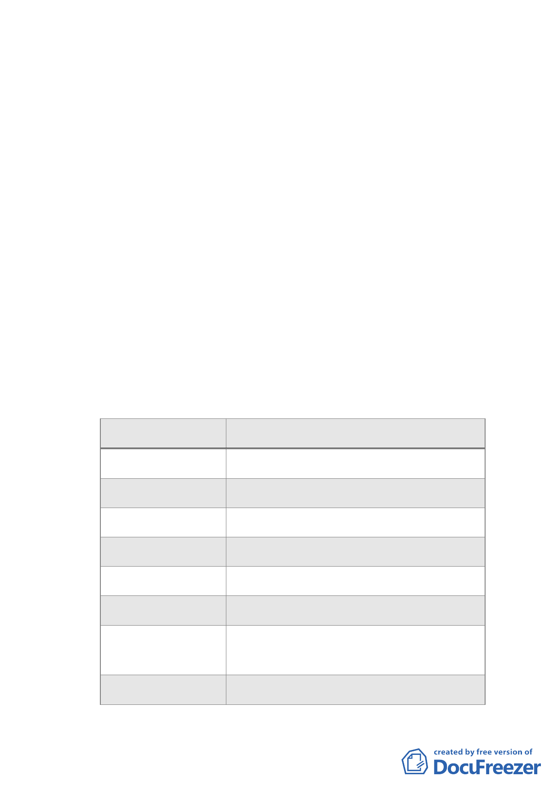

視覺廊道 40 公尺（下限）」，以及本次會議部分委員建議
之建築高度 90 公尺（上限）（視覺廊道配合調整為 70 公
尺，下限），併提委員會審議。屆時請市府就上開兩方案
對於大彎北段地區整體都市景觀風貌塑造之影響及優
劣，提出評估說明，並請各申請單位就個案擬提高建築
高度之考量因素，於委員會議上提出說明。
（三）經徵詢各申請單位意見，俱表示有關土地使用管制部分
均同意依市都委會第 611 次委員會決議，以本區 92 年公
告實施之都市計畫為基準、不得作住宅使用；申請「2010
年臺北好好看」容積獎勵比照商三允許使用項目，惟亦
不得作住宅使用。
（四）有關個案得適用「2010 年臺北好好看」之「容積獎勵項
目」，原則同意本次提會之申請項目（詳下表），請各申
請單位就個案所規劃之開放空間，對於周邊實質環境之
開放性、公益性以及貢獻程度，於委員會議上提出說明。
其中申請「室內挑空開放空間」者，應於計畫書內載明
配套管理機制併提大會確認。
案件別
申請獎勵項目
健豪建設 A2
室內挑空開放空間、廣場式開放空間
興富發建設 B2 廣場式開放空間
興富發建設 B10 廣場式開放空間、地面人行通道
宏普建設 B4
廣場式開放空間
長虹建設 A7
廣場式開放空間
忠泰建設 A2
室內挑空開放空間、廣場式開放空間
全聯企業 B2
廣場式開放空間、立體人行通道、地面人
行通道
瓏山林企業 B2 廣場式開放空間
- 26 -